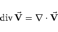

Inhalt Index DeskTop Bronstein

 Vektoranalysis und Feldtheorie Räumliche Differentialoperationen Divergenz des Vektorfeldes Divergenz in verschiedenen Koordinaten
Vektoranalysis und Feldtheorie Räumliche Differentialoperationen Divergenz des Vektorfeldes Divergenz in verschiedenen Koordinaten


| (13.47a) |
mit
| (13.47b) |
Das Skalarfeld  ist durch das Skalarprodukt aus Nablaoperator und Vektor
ist durch das Skalarprodukt aus Nablaoperator und Vektor  gemäß
gemäß
|  | (13.47c) |
darstellbar und zeichnet sich daher durch Translations- und Drehungsinvarianz, also durch
skalare Invarianz aus.
| (13.48a) |
mit
| (13.49a) |
mit
| (13.49b) |